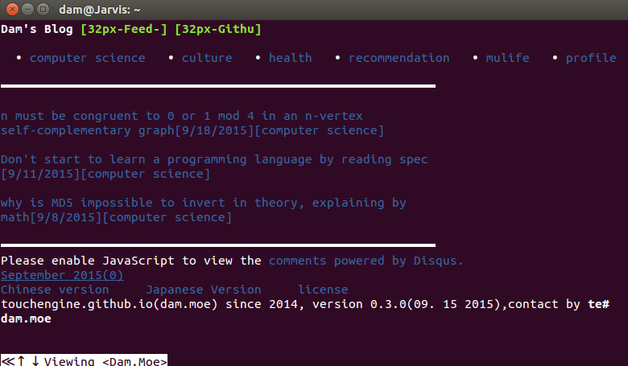

I don't use CSS in my blog for these reasonsSome people asked me why don't I use CSS in my blog even some people tried to convince me to use it decorate these pages. it is necessary to write down this article to explain my thoughts. 1. use CSS to style my blog waste of my too much timeI am weak in UI design all the way, due to my color weakness and uninterest in study of the UI design, I haven't read any books about web design or other design. if now I intend to use CSS on my blog, I must spend much time on study for this field. oh, unfortunately, I don't plan on learning CSS or use it in my blog, because I am not willing to spend time on it, I see that I do not have gift and interest for it. 2. decrease the traffic and speed upJust as Douglas says we can save the trees in JavaScript: the good parts, base on the thrift principle, don't use CSS means that I can decrease the network traffic, routers reduce power consumption so that save more electric power :), another benefit is sure that people can get to my blog in less time, also save people's valuable time, not bad. 3. make readers pay more attentions to the blog contents rather than gaudy pagesIt is no doubt that colorful pages will distract people's attentions so that make people can't focus on my blog contents what I really wanna convey, it is not my origin intention, maybe somebody would say if you don't use any CSS to beautify your blog, those people won't like your blog even won't read your articles. I think if people who don't like my blog because I don't use CSS to make flashy pages, and these people aren't who I want to exchange thoughts with. the one of the reasons why I set up this blog is to exchange thoughts with insightful men. 4. get the more similar pages in console browserCSS style almost is useless when pages are browsed through console tools for example w3m. well, nobody use console browser to browse web pages nowaday? no no no, I still using, I don't use GUI when I login my Raspberry Pi or Ubuntu by SSH, I only use the console, I have special complex for those old things related with computer. Maybe you will think I write it for encouraging you to don't use CSS. however, actually, all I want to deliver is, follow your heart and thoughts, use it or not, all depends on you, do it just for fun and easy life.  |